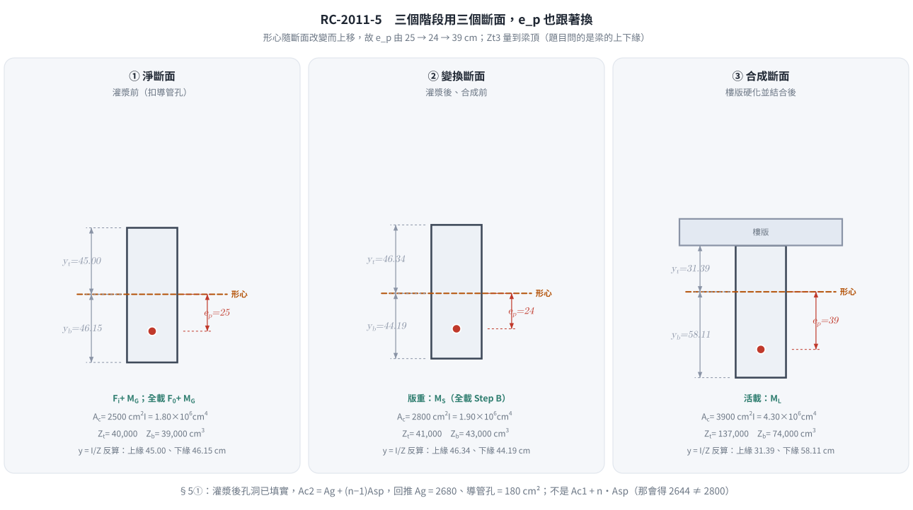
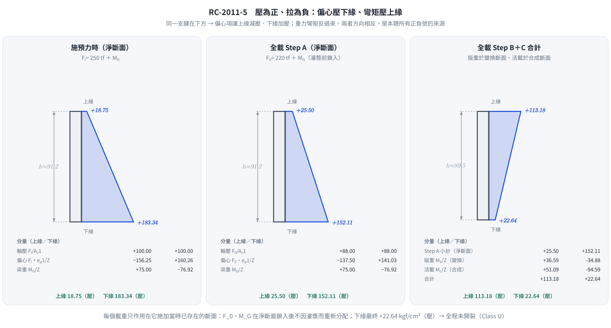
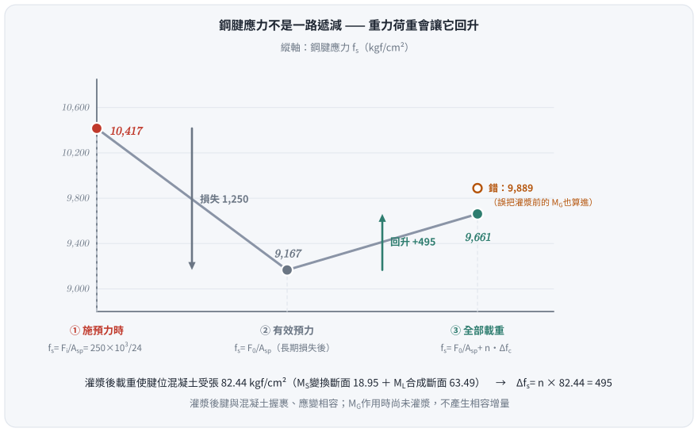

📄 題目正本：考卷原文・附圖・判讀清單（已確認）
RC-2011-5 題目正本
本檔只記錄考卷上寫了什麼、圖上畫了什麼，不含任何解法。解析見同資料夾
RC-2011-5.md。
判讀清單已經使用者確認（凍結）；本檔原則上不再修改（改動須回考卷原圖並記 log）。
| 項目 | 內容 |
|---|---|
| 考卷 | raw/exams/RC-2011_鋼筋混凝土設計與預力.pdf 第 2 頁（背面），第五題 |
| 考年 | 民國 100 年（2011） |
| 配分 | 20 分 |
| 附圖 | 無（本題無附圖） |
| 判讀狀態 | 已確認（2026-11-14 使用者確認；轉錄 2026-11-14；PyMuPDF 110／140 dpi 目視＋抽出文字核對；盲讀後才比對既有解析） |
1. 考卷原文（逐字）
五、若後拉法預力混凝土梁斷面承受之起始預力 $F_i$＝250 tf，有效預力 $F_0$＝220 tf，梁重產生之力矩 $M_G$＝30 tf-m，版重產生之力矩 $M_S$＝15 tf-m，活載重產生之力矩 $M_L$＝70 tf-m，梁斷面於淨斷面時之 $A_{c1}$＝2500 cm²，$Z_{t1}$＝40000 cm³，$Z_{b1}$＝39000 cm³，$I_1$＝1800000 cm⁴，$e_{p1}$＝25 cm，於變換斷面時之 $A_{c2}$＝2800 cm²，$Z_{t2}$＝41000 cm³，$Z_{b2}$＝43000 cm³，$I_2$＝1900000 cm⁴，$e_{p2}$＝24 cm，於合成斷面時之 $A_{c3}$＝3900 cm²，$Z_{t3}$＝137000 cm³，$Z_{b3}$＝74000 cm³，$I_3$＝4300000 cm⁴，$e_{p3}$＝39 cm，且材料之 n＝6，鋼腱面積 $A_{sp}$＝24 cm²，請分析此梁斷面在施預力時及全部載重作用時之鋼腱應力及上下緣混凝土應力。其中 $A_c$ 為梁斷面積，$Z_t$、$Z_b$ 為梁斷面上下緣之斷面模數，$I$ 為梁斷面慣性矩，$e_p$ 為鋼腱之偏心距離。（20 分）
2. 考卷給的公式、附表與參數
- 預力：$F_i=250$、$F_0=220$ tf（後拉法）。
- 彎矩：$M_G=30$（梁重）、$M_S=15$（版重）、$M_L=70$（活載）tf-m。
- 三組斷面性質（照錄）：
| 斷面 | $A_c$ (cm²) | $Z_t$ (cm³) | $Z_b$ (cm³) | $I$ (cm⁴) | $e_p$ (cm) |
|---|---|---|---|---|---|
| 1 淨斷面 | 2,500 | 40,000 | 39,000 | 1,800,000 | 25 |
| 2 變換斷面 | 2,800 | 41,000 | 43,000 | 1,900,000 | 24 |
| 3 合成斷面 | 3,900 | 137,000 | 74,000 | 4,300,000 | 39 |
- $n=6$；鋼腱面積 $A_{sp}=24$ cm²。
- 考卷未印任何公式、容許應力，也未要求檢核。
- 沒有給：各彎矩分別作用於哪一個斷面（版重由梁單獨或合成斷面承受、灌漿時機）、合成斷面中 $Z_t$ 指梁頂或版頂、施工是否有支撐。
- 卷首注意事項：可以使用電子計算器。不必抄題，作答時請將試題題號及答案依照順序寫在試卷上，於本試題上作答者，不予計分。本試題之相關符號、公式、物理常數及設計參數未提及時，請依規範自行做合理推斷或假設。
3. 附圖
本題無附圖。
4. 判讀清單
「把握」標不確定者請優先確認；解讀類項目（題目用字的意思）另標「解讀」。
| # | 項目 | 判讀 | 圖上／題文依據 | 把握 |
|---|---|---|---|---|
| 1 | 三組斷面的使用時機 | 淨斷面（灌漿前，扣套管）→ 施預力時；變換斷面（灌漿後，鋼腱以 $n$ 換算）→ 梁單獨承受後續載重；合成斷面（版硬化後）→ 活載重。考卷只給性質、未寫各彎矩對應哪個斷面 | 題文三組性質名稱 | 確定（解讀）（版重屬「版澆置時」載重，合成前由梁（變換斷面）承受；活載重由合成斷面承受） |
| 2 | 「施預力時」的載重 | $F_i$＋梁重 $M_G$ | 題文 | 確定（解讀） |
| 3 | 「全部載重作用時」 | $F_0$＋$M_G$＋$M_S$＋$M_L$ | 題文 | 確定（解讀） |
| 4 | 合成斷面 $Z_{t3}$ | 解讀為合成斷面形心至梁頂（而非版頂）的斷面模數，因題目問「梁斷面上下緣」；考卷未註明 | 題文定義「$Z_t$、$Z_b$ 為梁斷面上下緣之斷面模數」 | 確定（解讀） |
| 5 | 斷面性質的內部一致性 | $I/Z$ 推得上下緣距離：淨 45.0／46.2（深 91.2）、變換 46.3／44.2（90.5）、合成 31.4／58.1（89.5）；合成斷面算出的深度反而小於梁深，故 $Z_{t3}$ 若指版頂則不自洽 → 支持 #4 解讀；照考卷數值使用 | 程式依考卷數值計算 | 確定（照考卷數值） |
| 6 | 問的量 | 兩階段各求：鋼腱應力、梁上緣與下緣混凝土應力（不要求檢核容許值） | 題文 | 確定 |
| 7 | 考卷沒有給 | 彎矩對應斷面、灌漿時機、支撐、容許應力 | 全題 | 確定（作答須自行假設） |
轉錄：2026-11-14（RC-U4-1 題目正本推廣・批 1）
確認：2026-11-14 使用者確認（RC-U4-1 題目正本推廣・批 1，關卡一）
考題編號：RC-2011-5
主分類： RC-U4-1 預力梁斷面應力分析
副分類： 無
設計法： WSD 工作應力設計法
標籤： 後拉法 有黏結腱 合成斷面 三斷面分析 淨斷面 變換斷面 鋼腱應力 上下緣應力 施預力階段 全載重階段 n值相容性
1. 題目（考卷原文見題目正本）
考卷原文、公式／附表、附圖與判讀清單（已確認）見
RC-2011-5-problem.md。本節只列解題時最容易讀錯的地方與本解使用的記號；題意以題目正本為準。
常見誤讀
| 項目 | 正確判讀 | 常見誤讀 |
|---|---|---|
| 三組斷面的使用時機（#1） | 施預力時用淨斷面；版重（合成前）用變換斷面（梁單獨）；活載重用合成斷面 | 整題只用一組 $Z$ |
| 施預力時（#2） | $F_i$＋梁重 $M_G$ | 加入版重 |
| 全部載重（#3） | $F_0$＋$M_G$＋$M_S$＋$M_L$；$F_0$、$M_G$ 仍在淨斷面（灌漿前鎖入），$M_S$ 用變換、$M_L$ 用合成 | 漏 $M_G$ 或 $M_S$；或全載時把 $F_0+M_G$ 改放到變換斷面重算 |
| 全載鋼腱應力 | 只計灌漿後施加的 $M_S$、$M_L$ 造成的相容增量 | 把灌漿前已作用的 $M_G$ 也算進 $n\,\Delta\sigma_c$ |
| 合成斷面 $Z_{t3}$（#4） | 指合成形心至梁頂的斷面模數（題目問梁的上下緣） | 當成版頂 |
本解記號： $n=E_p/E_c=6$；$A_{sp}=24$ cm²；三組斷面性質照考卷數值（題目正本 §2 表），不另行重算。本題為純分析題，考卷未給容許應力、不含驗算。
2. 考題核心精神與出題者意圖 (Core Concepts & Examiner's Intent)
核心觀念：
- 後拉法複合（合成）斷面預力梁，荷重分三階段施加，各階段用不同斷面：
- 灌漿前：淨斷面 → 施預力時 $F_i + M_G$；全載時預力降為 $F_0$，仍作用在淨斷面（$F_0 + M_G$）
- 灌漿後、合成前：變換斷面 → 版重 $M_S$
- 合成後：合成斷面 → $M_L$
-
每個載重只作用在它施加當時已存在的斷面；已鎖入的應力不會因為斷面改變而重新分配
-
鋼腱應力計算：後拉法鋼腱灌漿後才與混凝土握裹，鋼腱應力 = 基礎值（$F_0/A_{sp}$）+ $n \times$ 灌漿後載重（$M_S$、$M_L$）在腱位造成的混凝土應力變化
出題者意圖：
- 測驗三種斷面的正確使用時機
- 測驗預力梁彈性應力疊加（壓正拉負）的符號判斷
- 測驗鋼腱相容性公式求腱應力（不能直接用 $F/A_{sp}$）
3. 解題戰略地圖與陷阱分析 (Strategic Roadmap & Trap Analysis)
作戰計畫：
- 施預力時：用淨斷面 + $F_i$ + $M_G$ → 算 fc_top、fc_bot；腱應力 = $F_i/A_{sp}$
- 全部載重時：
- Step A：淨斷面，$F_0 + M_G$（灌漿前鎖入）
- Step B：變換斷面，$M_S$
- Step C：合成斷面，$M_L$
- 疊加：fc_top_total、fc_bot_total
- 腱應力：$F_0/A_{sp}$ + $n \times$（$M_S$、$M_L$ 在腱位的混凝土應力變化）
關鍵陷阱：
| 陷阱 | 說明 | 應對 |
|---|---|---|
| ❶ 施預力用淨斷面，非全截面 | 後拉法灌漿前，導管孔洞需扣除 | 用 $A_{c1}$, $Z_{t1}$, $Z_{b1}$, $I_1$, $e_{p1}$ |
| ❷ 三個偏心距不同 | $e_{p1}=25$（淨）, $e_{p2}=24$（變換）, $e_{p3}=39$（合成） | 各階段用對應 $e_p$ |
| ❸ 腱應力≠單純 $F/A_{sp}$ | 全載重下腱應力 = $F_0/A_{sp}$ + 灌漿後載重（$M_S$、$M_L$）引起之相容應力；$M_G$ 灌漿前已作用，不計 | 用 $n \times \Delta\sigma_c$ 修正 |
| ❹ 各載重只用施加當時的斷面 | $F_0$、$M_G$ 在淨斷面（灌漿前）、$M_S$ 在變換斷面、$M_L$ 在合成斷面；全載時不可把 $F_0+M_G$ 改放到變換斷面重算 | 分清楚各載重的「時間點」 |
| ❻ 鋼腱相容增量的起算點 | $M_G$ 作用時尚未灌漿，鋼腱與混凝土無握裹 | 增量只計 $M_S$、$M_L$ |
| ❺ 偏心引起的上下緣應力符號 | 偏心在下 → 上緣拉（負）、下緣壓（正）；重力 → 上緣壓（正）、下緣拉（負） | 逐項判斷，不要記符號，要用物理直覺 |
3.5 變數層次分析 (Variable Hierarchy Analysis)
最終目標
求梁在施預力時（$F_i$, $M_G$, 淨斷面）和全部載重時（$F_0 + M_G$ 在淨斷面、$M_S$ 在變換斷面、$M_L$ 在合成斷面）的上下緣混凝土應力及鋼腱應力。
本題關鍵公式（依計算順序）
$$\text{施預力 — 上緣：} f_{c,top}^{(1)} = \frac{F_i}{A_{c1}} - \frac{F_i e_{p1}}{Z_{t1}} + \frac{M_G}{Z_{t1}}$$
$$\text{施預力 — 下緣：} f_{c,bot}^{(1)} = \frac{F_i}{A_{c1}} + \frac{F_i e_{p1}}{Z_{b1}} - \frac{M_G}{Z_{b1}}$$
$$\text{施預力 — 腱應力：} f_{s}^{(1)} = \frac{F_i}{A_{sp}}$$
$$\text{全載 Step A（淨斷面）— 上緣：} f_A^{top} = \frac{F_0}{A_{c1}} - \frac{F_0 e_{p1}}{Z_{t1}} + \frac{M_G}{Z_{t1}}$$
$$\text{全載 Step A（淨斷面）— 下緣：} f_A^{bot} = \frac{F_0}{A_{c1}} + \frac{F_0 e_{p1}}{Z_{b1}} - \frac{M_G}{Z_{b1}}$$
$$\text{全載 Step B（變換斷面）：} f_B^{top} = +\frac{M_S}{Z_{t2}},\quad f_B^{bot} = -\frac{M_S}{Z_{b2}}$$
$$\text{全載 Step C（合成斷面）：} f_C^{top} = +\frac{M_L}{Z_{t3}},\quad f_C^{bot} = -\frac{M_L}{Z_{b3}}$$
$$\text{腱位混凝土應力（灌漿後載重）：} \sigma_{c,p} = -\frac{M_S\,e_{p2}}{I_2} - \frac{M_L\,e_{p3}}{I_3}$$
$$\text{全載 — 腱應力：} f_s^{(2)} = \frac{F_0}{A_{sp}} + n \left|\sigma_{c,p}\right|$$
L1：題目直接給定
| 符號 | 數值 | 說明 |
|---|---|---|
| $F_i$ | 250 tf | 起始預力 |
| $F_0$ | 220 tf | 有效預力（含所有損失） |
| $M_G$ | 3,000,000 kgf·cm | 梁重 |
| $M_S$ | 1,500,000 kgf·cm | 版重 |
| $M_L$ | 7,000,000 kgf·cm | 活載重 |
| $n$ | 6 | $E_p/E_c$ |
| $A_{sp}$ | 24 cm² | 鋼腱面積 |
| 三組斷面性質 | 詳見題目 | 淨/變換/合成 |
L2：需知識點推導
▌ 施預力時（淨斷面）
| 符號 | 計算 | 卡關? |
|---|---|---|
| $F_i/A_{c1}$ | $250{,}000/2500 = 100$ kgf/cm² | |
| $F_i e_{p1}/Z_{t1}$ | $250{,}000\times25/40{,}000 = 156.25$ kgf/cm² | |
| $F_i e_{p1}/Z_{b1}$ | $250{,}000\times25/39{,}000 = 160.26$ kgf/cm² | |
| $M_G/Z_{t1}$ | $3{,}000{,}000/40{,}000 = 75$ kgf/cm² | |
| $M_G/Z_{b1}$ | $3{,}000{,}000/39{,}000 = 76.92$ kgf/cm² |
▌ 全載 Step A（淨斷面，$F_0+M_G$）
| 符號 | 計算 | 卡關? |
|---|---|---|
| $F_0/A_{c1}$ | $220{,}000/2500 = 88.00$ kgf/cm² | |
| $F_0 e_{p1}/Z_{t1}$ | $220{,}000\times25/40{,}000 = 137.50$ kgf/cm² | |
| $F_0 e_{p1}/Z_{b1}$ | $220{,}000\times25/39{,}000 = 141.03$ kgf/cm² | |
| $M_G/Z_{t1}$、$M_G/Z_{b1}$ | 75.00、76.92 kgf/cm² |
▌ 全載 Step B（變換斷面，$M_S$）
| 符號 | 計算 | 卡關? |
|---|---|---|
| $M_S/Z_{t2}$ | $1{,}500{,}000/41{,}000 = 36.59$ kgf/cm² | |
| $M_S/Z_{b2}$ | $1{,}500{,}000/43{,}000 = 34.88$ kgf/cm² |
▌ 全載 Step C（合成斷面，$M_L$）
| 符號 | 計算 | 卡關? |
|---|---|---|
| $M_L/Z_{t3}$ | $7{,}000{,}000/137{,}000 = 51.09$ kgf/cm² | |
| $M_L/Z_{b3}$ | $7{,}000{,}000/74{,}000 = 94.59$ kgf/cm² |
▌ 腱應力（全載時）
| 符號 | 計算 | 卡關? |
|---|---|---|
| $F_0/A_{sp}$ | $220{,}000/24 = 9{,}167$ kgf/cm² | |
| $M_S e_{p2}/I_2$ | $1{,}500{,}000\times24/1{,}900{,}000 = 18.95$ kgf/cm²（張） | |
| $M_L e_{p3}/I_3$ | $7{,}000{,}000\times39/4{,}300{,}000 = 63.49$ kgf/cm²（張） | |
| $\sigma_{c,p}$ | $-(18.95+63.49) = -82.44$ kgf/cm²（張） | |
| $\Delta f_s$ | $n\times82.44 = 6\times82.44 = 495$ kgf/cm² | |
| $f_s^{(2)}$ | $9{,}167 + 495 = 9{,}661$ kgf/cm² |
L3：深層知識（不懂就卡住）
| 知識點 | 說明 | 卡關? |
|---|---|---|
| 後拉法三斷面的使用時機 | 淨斷面（灌漿前）→ 變換斷面（灌漿後）→ 合成斷面（含版） | |
| 腱應力計算：不是 $F/A_{sp}$，是相容性 | 灌漿後的載重使腱位混凝土張力增大 → 混凝土拉伸 → 腱也拉伸 → 腱拉力增加；灌漿前的 $M_G$ 不產生相容增量 | |
| 已鎖入的應力不重新分配 | 斷面在灌漿、合成時改變，但之前施加的 $F_0$、$M_G$ 造成的應力已存在，後續只疊加新載重在新斷面上的應力 | |
| 三個偏心距代表不同斷面的幾何 | $e_{p1}$ = 距淨斷面形心；$e_{p2}$ = 距變換斷面形心；$e_{p3}$ = 距合成斷面形心 | |
| 壓力正、拉力負的符號規則 | 軸壓 → 正；偏心→上緣張（負）、下緣壓（正）；重力→上緣壓（正）、下緣張（負） |
4. 步驟化詳細計算過程 (Step-by-Step Detailed Calculation)
符號規定：壓力 = 正，拉力 = 負
單位：kgf·cm（力矩），kgf/cm²（應力）

圖 1 三個階段各用哪一組斷面性質。同一支梁在施拉、灌漿後、樓版合成後是三個不同的斷面——這張圖攔的是「整題只用一組 $Z$ 值」這個最常見的失分點：$Z_{b}$ 從 39,000 一路長到 74,000，用錯一組，下緣應力可以差到一倍。
施預力時（Initial Prestress Stage）
使用淨斷面（$A_{c1}$, $Z_{t1}$, $Z_{b1}$, $I_1$, $e_{p1}$）
作用載重：$F_i = 250{,}000$ kgf + $M_G = 3{,}000{,}000$ kgf·cm
① 混凝土上緣應力
$$f_{c,top}^{(1)} = \underbrace{\frac{F_i}{A_{c1}}}_{\text{軸壓}} - \underbrace{\frac{F_i\,e_{p1}}{Z_{t1}}}_{\text{偏心→上緣張}} + \underbrace{\frac{M_G}{Z_{t1}}}_{\text{重力→上緣壓}}$$
$$= \frac{250{,}000}{2500} - \frac{250{,}000\times25}{40{,}000} + \frac{3{,}000{,}000}{40{,}000}$$
$$= 100 - 156.25 + 75 = \boxed{18.75 \text{ kgf/cm}^2 \text{（壓）}}$$
② 混凝土下緣應力
$$f_{c,bot}^{(1)} = \frac{F_i}{A_{c1}} + \frac{F_i\,e_{p1}}{Z_{b1}} - \frac{M_G}{Z_{b1}}$$
$$= 100 + \frac{250{,}000\times25}{39{,}000} - \frac{3{,}000{,}000}{39{,}000}$$
$$= 100 + 160.26 - 76.92 = \boxed{183.34 \text{ kgf/cm}^2 \text{（壓）}}$$
③ 鋼腱應力（施預力時）
後拉法施拉時，腱應力由千斤頂直接決定：
$$\boxed{f_s^{(1)} = \frac{F_i}{A_{sp}} = \frac{250{,}000}{24} = 10{,}417 \text{ kgf/cm}^2 \text{（拉）}}$$
全部載重作用時（Full Loading Stage）
需三步疊加：Step A（有效預力＋梁重，淨斷面）＋ Step B（版重，變換斷面）＋ Step C（活載，合成斷面）。
每個載重只作用在它施加當時已存在的斷面；$F_0$、$M_G$ 在灌漿前已作用於淨斷面，灌漿與合成之後這部分應力不會重新分配。
Step A：淨斷面，$F_0 + M_G$
上緣：
$$f_A^{top} = \frac{F_0}{A_{c1}} - \frac{F_0\,e_{p1}}{Z_{t1}} + \frac{M_G}{Z_{t1}} = 88.00 - 137.50 + 75.00 = +25.50 \text{ kgf/cm}^2$$
下緣：
$$f_A^{bot} = \frac{F_0}{A_{c1}} + \frac{F_0\,e_{p1}}{Z_{b1}} - \frac{M_G}{Z_{b1}} = 88.00 + 141.03 - 76.92 = +152.11 \text{ kgf/cm}^2$$
Step B：變換斷面，$M_S$（灌漿後、合成前）
$$f_B^{top} = +\frac{M_S}{Z_{t2}} = +\frac{1{,}500{,}000}{41{,}000} = +36.59 \text{ kgf/cm}^2,\qquad f_B^{bot} = -\frac{M_S}{Z_{b2}} = -\frac{1{,}500{,}000}{43{,}000} = -34.88 \text{ kgf/cm}^2$$
Step C：合成斷面，$M_L$（僅活載重）
$$f_C^{top} = +\frac{M_L}{Z_{t3}} = +\frac{7{,}000{,}000}{137{,}000} = +51.09 \text{ kgf/cm}^2,\qquad f_C^{bot} = -\frac{M_L}{Z_{b3}} = -\frac{7{,}000{,}000}{74{,}000} = -94.59 \text{ kgf/cm}^2$$
全部載重時合計混凝土應力
$$\boxed{f_{c,top}^{(2)} = 25.50 + 36.59 + 51.09 = 113.18 \text{ kgf/cm}^2 \text{（壓）}}$$
$$\boxed{f_{c,bot}^{(2)} = 152.11 - 34.88 - 94.59 = 22.64 \text{ kgf/cm}^2 \text{（壓）}}$$

圖 2 應力沿三個斷面逐段疊加。偏心項在上緣是張、在下緣是壓，重力項則相反；$F_0$、$M_G$ 留在淨斷面，不因灌漿而改用變換斷面重算——這張圖攔兩件事：偏心項正負號寫反，以及把已鎖入的應力搬到新斷面重算（那樣下緣會算成 2.12，差一個數量級）。
全部載重時鋼腱應力（相容性法）
有黏結後拉法灌漿後，腱與混凝土相容。灌漿後施加的 $M_S$、$M_L$ 使腱位混凝土受張，腱隨之拉伸，腱應力增加；$M_G$ 在施拉當下已作用、當時導管尚未灌漿，不產生相容增量。
基礎腱應力（有效預力）：
$$f_{s,base} = \frac{F_0}{A_{sp}} = \frac{220{,}000}{24} = 9{,}167 \text{ kgf/cm}^2$$
腱位混凝土因灌漿後載重產生之張力：
變換斷面（$M_S$，$e_{p2} = 24$ cm）：
$$\sigma_{c,p}^{S} = -\frac{M_S\,e_{p2}}{I_2} = -\frac{1{,}500{,}000\times24}{1{,}900{,}000} = -18.95 \text{ kgf/cm}^2 \text{（張）}$$
合成斷面（$M_L$，$e_{p3} = 39$ cm）：
$$\sigma_{c,p}^{L} = -\frac{M_L\,e_{p3}}{I_3} = -\frac{7{,}000{,}000\times39}{4{,}300{,}000} = -63.49 \text{ kgf/cm}^2 \text{（張）}$$
合計：$\sigma_{c,p} = -18.95 + (-63.49) = -82.44$ kgf/cm²（張）
$$\Delta f_s = n \times \left|\sigma_{c,p}\right| = 6 \times 82.44 = +495 \text{ kgf/cm}^2$$
$$\boxed{f_s^{(2)} = f_{s,base} + \Delta f_s = 9{,}167 + 495 = 9{,}661 \text{ kgf/cm}^2 \text{（拉）}}$$

圖 3 腱應力不是單調下降的。$10{,}417 \to 9{,}167$ 是預力損失，$9{,}167 \to 9{,}661$ 是灌漿後載重使腱位混凝土受張、腱跟著拉長——這張圖攔兩個錯：「加載後腱應力一定更低」，以及把灌漿前的 $M_G$ 也算進相容增量（得 9,889）。
彙整成果表
| 時間點 | 上緣 $f_c$ | 下緣 $f_c$ | 鋼腱 $f_s$ |
|---|---|---|---|
| 施預力時（$F_i + M_G$，淨斷面） | 18.75 kgf/cm²（壓） | 183.34 kgf/cm²（壓） | 10,417 kgf/cm²（拉） |
| 全部載重時（$F_0+M_G$ 淨、$M_S$ 變換、$M_L$ 合成，疊加） | 113.18 kgf/cm²（壓） | 22.64 kgf/cm²（壓） | 9,661 kgf/cm²（拉） |
5. 關鍵爭議點與進階探討 (Critical Issues & Advanced Discussion)
① 三種斷面的使用邏輯
| 斷面 | 組成 | 使用時機 |
|---|---|---|
| 淨斷面（$A_{c1}=2500$） | 全斷面混凝土 − 導管孔 | 後拉法施拉時（灌漿前） |
| 變換斷面（$A_{c2}=2800$） | 全斷面混凝土（孔已灌漿填實）＋ $(n-1)A_{sp}$ | 灌漿後，合成前（版重 $M_S$ 作用） |
| 合成斷面（$A_{c3}=3900$） | 梁變換斷面 ＋ 轉換樓版 | 版澆置並達強度後（活載作用） |
⚠ 勘誤（2026-08-22）： 舊版本頁寫「$A_{c2} = A_{c1} + n\,A_{sp}$」，代入即 $2500 + 6\times24 = 2644 \ne 2800$，與題給數字矛盾。
正確關係是 $A_{c2} = A_g + (n-1)A_{sp}$，其中 $A_g$ 為含導管孔在內的全斷面積：
$A_g = A_{c2} - (n-1)A_{sp} = 2800 - 5\times24 = 2680$ cm²，回推導管孔面積 $= 2680 - 2500 = 180$ cm²（合理）。
兩個要點：① 灌漿後孔洞已被漿體填實，要把孔加回來；② 轉換鋼腱只加 $(n-1)A_{sp}$，
因為鋼腱佔的那塊混凝土已經算過一次，不能重複計入（$nA_{sp}$ 是先拉法「不扣佔位」時的錯誤寫法）。
② 腱應力的物理直覺
| 狀態 | 腱應力 | 原因 |
|---|---|---|
| 施拉時 $f_s = F_i/A_{sp}$ | 10,417 kgf/cm² | 千斤頂直接拉伸 |
| 有效預力 $f_{s,0} = F_0/A_{sp}$ | 9,167 kgf/cm² | 長期損失（潛變/收縮/鬆弛）後 |
| 全載重 $f_s^{(2)}$ | 9,661 kgf/cm² | 灌漿後載重（$M_S$、$M_L$）使腱位混凝土拉伸，腱應力回升 |
③ 載重與斷面的對應：舊版解析的錯誤（2026-11-14 勘誤）
舊版在「全部載重」階段把 $F_0$ 與 $M_G$ 改放到變換斷面重算（上緣 59.55、下緣 96.71），再加活載得上緣 110.64、下緣 2.12；腱應力增量也把 $M_G$ 算進去（$n\times120.33=722$，得 9,889）。這有兩個問題：
- 施預力階段已用淨斷面承受 $F_i+M_G$。斷面在灌漿後雖然改變，先前鎖入的應力不會重新分配；前後兩階段若用不同斷面算同一個 $M_G$，模型自相矛盾。
- $M_G$ 在施拉當下已作用，當時導管未灌漿，鋼腱與混凝土沒有握裹，$M_G$ 不會讓鋼腱再伸長。
本解：$F_0$、$M_G$ 用淨斷面，$M_S$ 用變換斷面，$M_L$ 用合成斷面 → 上緣 113.18、下緣 22.64、鋼腱 9,661。
另一種合理假設（對照）： 若預力損失 $\Delta F = F_0 - F_i = -30$ tf 視為灌漿後才發生（作用在變換斷面），則上緣 113.28、下緣 26.40 kgf/cm²（壓）。題目只給 $F_0$，本解採「$F_0$ 作用於淨斷面」的常見做法；作答時寫明假設即可。
④ 全載下緣應力的意義
$f_{c,bot}^{(2)} = 22.64$ kgf/cm²（壓），全斷面在全部載重下仍受壓、始終未開裂，因此整題採未開裂全斷面性質是合法的。
注意單位制——下列係數為 kgf/cm² 制：
| 控制條件 | kgf/cm² 制 | 對應 SI（MPa）制 |
|---|---|---|
| 傳遞後底纖維壓應力 | $\le 0.60f'_{ci}$（簡支構材端部 $0.70f'_{ci}$） | 同 |
| 傳遞後頂纖維拉應力 | $\le 0.80\sqrt{f'_{ci}}$（端部 $1.60\sqrt{f'_{ci}}$） | $0.25\sqrt{f'_{ci}}$／$0.50\sqrt{f'_{ci}}$ |
| 使用時底纖維拉應力（Class U） | $\le 2.0\sqrt{f'_c}$（Class T 上限 $3.2\sqrt{f'_c}$） | $0.62\sqrt{f'_c}$／$1.0\sqrt{f'_c}$ |
| 使用時頂纖維壓應力 | 持續載重 $\le 0.45f'_c$；含瞬時活載 $\le 0.60f'_c$ | 同 |
⑤ 考場速解提示
本題計算量大，建議：
- 先整理各分量表格（每行對應一個效應）
- 符號方向判斷後統一方向再代入，不要每項都重推
- 腱應力計算只需：$F_0/A_{sp}$ + $n \times$ 灌漿後載重（$M_S$、$M_L$）在腱位的張應力
- 最後彙整成果表（上下緣 + 腱應力），得分率最高
6. 依最新規範對照（土木 401-112／ACI 318-19）
結論：現行規範不改變計算方式。 本題是純彈性疊加分析，不涉及任何強度公式，
最新規範改動的是「容許應力的分級」與「條文編號」，不是應力計算方式。
| 項目 | 原解所用 | 土木 401-112／ACI 318-19 | 影響 |
|---|---|---|---|
| 彈性應力疊加 $f = F/A \pm Fe/Z \mp M/Z$ | 同 | §24.5 未改（材料力學式） | 無 |
| 三斷面時序（淨→變換→合成） | 同 | §24.5.2.1 及解說未改 | 無 |
| 有黏結腱之應變相容 $\Delta f_s = n\Delta f_c$ | 同 | 未改 | 無 |
| 傳遞後容許壓應力 | $0.60f'_{ci}$ | $0.60f'_{ci}$，簡支構材端部 $0.70f'_{ci}$（§24.5.3.1） | 本題未要求驗算 |
| 傳遞後容許拉應力 | — | $0.80\sqrt{f'_{ci}}$；端部 $1.60\sqrt{f'_{ci}}$（kgf/cm² 制） | 同上 |
| 使用階段拉應力 | 舊制單一上限 | 改為 Class U／T／C 三級：$\le 2.0\sqrt{f'_c}$（U，未開裂分析有效）／$\le 3.2\sqrt{f'_c}$（T）／超過為 C（須開裂斷面分析） | 本題下緣為壓（+22.64），屬 Class U，未開裂彈性分析成立 ✓ |
| 使用階段壓應力 | — | 持續載重 $0.45f'_c$、含瞬時活載 $0.60f'_c$（§24.5.4） | 本題未給 $f'_c$，無法驗算 |
| 條文編號 | ACI 318-99 §18.4 | ACI 318-19 §24.5（使用性）、§20.3.2.5（腱應力上限） | 僅編號 |
唯一值得補寫的一句： 全載下緣 $+22.64$ kgf/cm²（壓）代表斷面始終未開裂，
故整題採未開裂全斷面性質（$Z$、$I$）是合法的——這正是 318-19 Class U 的成立條件。
若下緣算出的是拉應力且超過 $2.0\sqrt{f'_c}$，本題這套「三斷面彈性疊加」就整個失效，必須改用開裂斷面。
圖解補繪：2026-08-31（向量圖 3 張，腳本 figs/gen_RC-2011-5.py，可重跑；腳本檔尾對 §4／§5 公佈值做 assert）
修正日期：2026-11-14（§1 改為指向題目正本（本題無附圖））
修正日期：2026-11-14（解析勘誤：全部載重階段 $F_0$、$M_G$ 改回淨斷面（舊解改放變換斷面重算，與施預力階段矛盾）、$M_S$ 用變換斷面、$M_L$ 用合成斷面；鋼腱相容增量只計灌漿後的 $M_S$、$M_L$；全載上緣 110.64 → 113.18、下緣 2.12 → 22.64 kgf/cm²（壓）、鋼腱 9,889 → 9,661 kgf/cm²；§1、§2、§3、§3.5、§4、§5 及圖 2、圖 3（gen 腳本重跑）同步；verify 腳本重算 MISMATCHES: 0，第二路徑為損失作用於變換斷面之對照）
修正日期：2026-11-14（解析勘誤（數值不變）：落實檢查殘留——§3 陷阱 ❸「重力引起之相容應力」改為「灌漿後載重（$M_S$、$M_L$）引起」，與 §4 鋼腱相容增量一致）